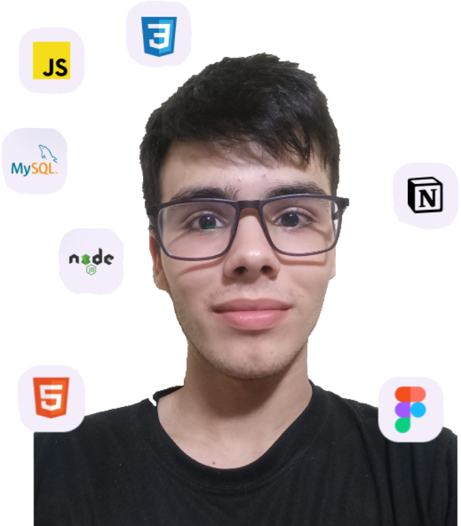

Desenrolador web fullstack
Oi, sou Felipe Mattos
Eu sou um aluno do Senac da unisinos, sou estudante em programação e este é meu portifólio. Dentro deste portifólio você encontrará meus projetos na programação deste ano até o dia 04/08/2023
